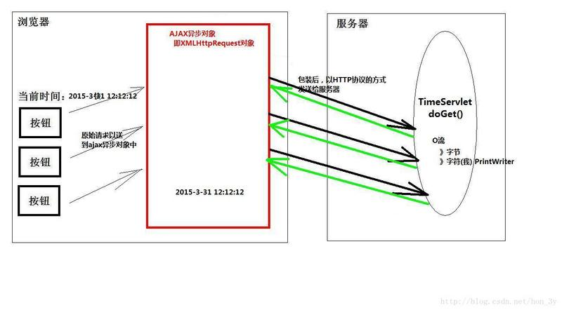
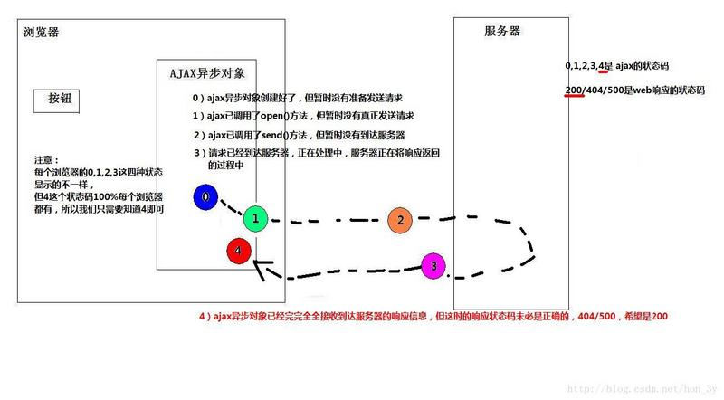
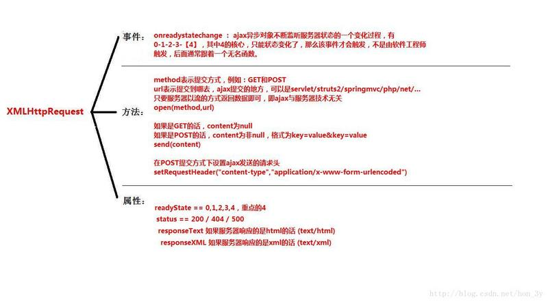

AJAX是“Asynchronous JavaScript and XML”的缩写。他是指一种创建交互式网页应用的网页开发技术。、
客户端与服务器，可以在【不必刷新整个浏览器】的情况下，与服务器进行异步通讯的技术
AJAX应用和传统Web应用有什么不同？

请介绍一下XMLhttprequest对象
Ajax的核心是JavaScript对象XmlHttpRequest。该对象在Internet Explorer 5中首次引入，它是一种支持异步请求的技术。简而言之，XmlHttpRequest使您可以使用JavaScript向服务器提出请求并处理响应，而不阻塞用户。通过XMLHttpRequest对象，Web开发人员可以在页面加载以后进行页面的局部更新
常用的方法就是黑色粗体的前三个
open()：该方法创建http请求
setRequestHeader(String header,String value)：设置消息头（使用post方式才会使用到，get方法并不需要调用该方法）
send(content)：发送请求给服务器
readyState：请求状态readyState一改变，回调函数被调用，它有5个状态

上面有两个地方都提及了回调函数，回调函数是什么？？
回调函数就是接收服务器返回的内容！

Ajax的实现流程是怎样的？
<script type="text/javascript">
var httpRequest;
function checkUsername() {
if(window.XMLHttpRequest) {
//在IE6以上的版本以及其他内核的浏览器(Mozilla)等
httpRequest = new XMLHttpRequest();
}else if(window.ActiveXObject) {
//在IE6以下的版本
httpRequest = new ActiveXObject();
}
//创建http请求
httpRequest.open("POST", "Servlet1", true);
//因为我使用的是post方式，所以需要设置消息头
httpRequest.setRequestHeader("Content-type", "application/x-www-form-urlencoded");
//指定回调函数
httpRequest.onreadystatechange = response22;
//得到文本框的数据
var name = document.getElementById("username").value;
//发送http请求，把要检测的用户名传递进去
httpRequest.send("username=" + name);
}
function response22() {
//判断请求状态码是否是4【数据接收完成】
if(httpRequest.readyState==4) {
//再判断状态码是否为200【200是成功的】
if(httpRequest.status==200) {
//得到服务端返回的文本数据
var text = httpRequest.responseText;
//把服务端返回的数据写在div上
var div = document.getElementById("result");
div.innerText = text;
}
}
}
</script>
AJAX请求总共有多少种CALLBACK
Ajax请求总共有八种Callback
有，IE中通过new ActiveXObject()得到，Firefox中通过newXMLHttpRequest()得到
AJAX有哪些有点和缺点？
优点：
缺点：
请解释一下 JavaScript 的同源策略。
同源策略是客户端脚本（尤其是Javascript）的重要的安全度量标准。它最早出自Netscape Navigator2.0，其目的是防止某个文档或脚本从多个不同源装载。所谓同源指的是：协议，域名，端口相同，同源策略是一种安全协议，指一段脚本只能读取来自同一来源的窗口和文档的属性。
阐述一下异步加载JS。
参考资料：
如何解决跨域问题?
理解跨域的概念：协议、域名、端口都相同才同域，否则都是跨域
出于安全考虑，服务器不允许ajax跨域获取数据，但是可以跨域获取文件内容。
AJAX跨域的问题可参考：
Ajax 解决浏览器缓存问题？
如果文章有错的地方欢迎指正，大家互相交流。习惯在微信看技术文章的同学，可以关注微信公众号:Java3y